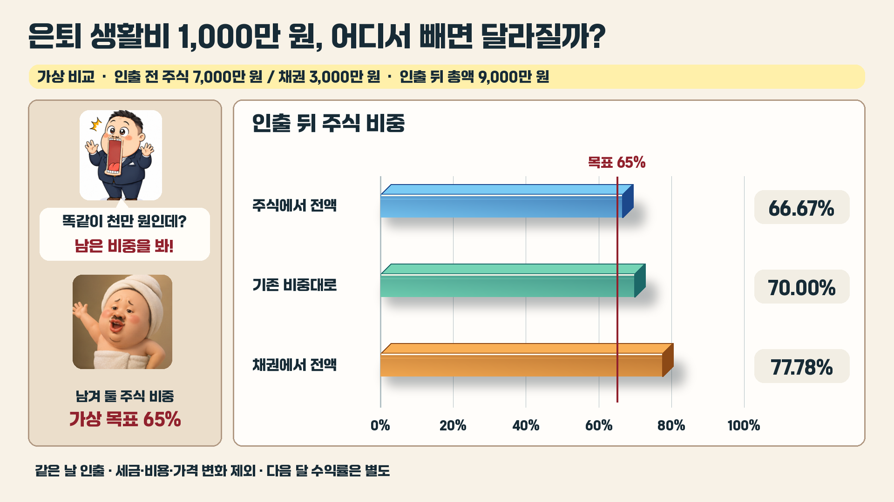

<!doctype html>
<html lang="ko">
<meta charset="utf-8">
<meta name="viewport" content="width=device-width, initial-scale=1">
<title>은퇴 생활비 1,000만 원 | TRUSTA 검토실</title>
<style>
:root{color-scheme:light;color:#172b36;background:#f5efe4;font:18px/1.6 system-ui,sans-serif}
body{max-width:72rem;margin:0 auto;padding:clamp(1rem,4vw,3rem)}
h1{line-height:1.23;margin:.4rem 0 1rem;font-size:clamp(1.65rem,4vw,2.8rem)}
main{display:grid;grid-template-columns:minmax(0,2fr) minmax(17rem,1fr);gap:1rem;align-items:start}
section,figure{margin:0;padding:1rem;border-radius:1rem;background:#fffdf8;border:1px solid #ded0be}
img,audio{display:block;width:100%}
figure img{height:auto;border-radius:.55rem}
figcaption{padding:.65rem .15rem 0}
a{color:#234f6e}
@media(max-width:52rem){main{grid-template-columns:1fr}}
</style>
<header><p>TRUSTA 투자연구소 · 제작 검토</p><h1>은퇴 생활비 1,000만 원, 오른 주식과 채권 중 어디서 꺼내면 다를까?</h1></header>
<main>
<figure><figcaption>가상 원화 사례. 어느 쪽에서 꺼내도 9,000만 원이 남지만 주식 비중은 달라집니다.</figcaption></figure>
<section aria-labelledby="listen"><h2 id="listen">지정 Qwen 음성</h2><p id="status" role="status">합성 완료 여부를 확인하는 중입니다.</p>
<audio id="narration" controls preload="none" hidden></audio>
<p><a href="../../EP163.md">원고 보기</a> · <a href="../../완성음성_재생실.html">전체 재생실</a></p>
</section>
</main>
<script>
const status = document.querySelector('#status');
const audio = document.querySelector('#narration');
const versions = [
  ['../../음성/EP163_Qwen_v2_보강/', '보강판'],
  ['../../음성/EP163_Qwen_v2/', '초판']
];
async function showAudio() {
  for (const [source, label] of versions) {
    try {
      const report = await fetch(source + 'report.csv', {cache:'no-store'});
      if (!report.ok || !(await report.text()).startsWith('line_id,seconds,gap_after')) continue;
      const wave = await fetch(source + 'full.wav', {method:'HEAD',cache:'no-store'});
      if (!wave.ok) continue;
      audio.src = source + 'full.wav';
      audio.defaultPlaybackRate = 1.2;
      audio.playbackRate = 1.2;
      audio.hidden = false;
      status.textContent = '지정 Qwen ' + label + ' · 기본 재생 1.2배속';
      return;
    } catch {
      continue;
    }
  }
  status.textContent = '전체 음성은 합성 대기 또는 진행 중입니다.';
}
showAudio();
</script>
